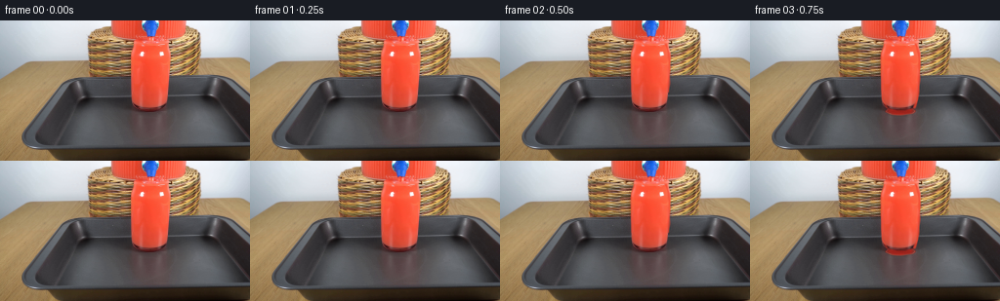
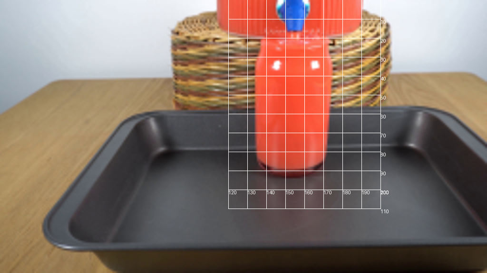
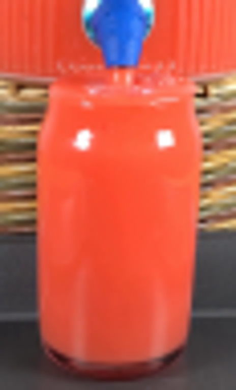
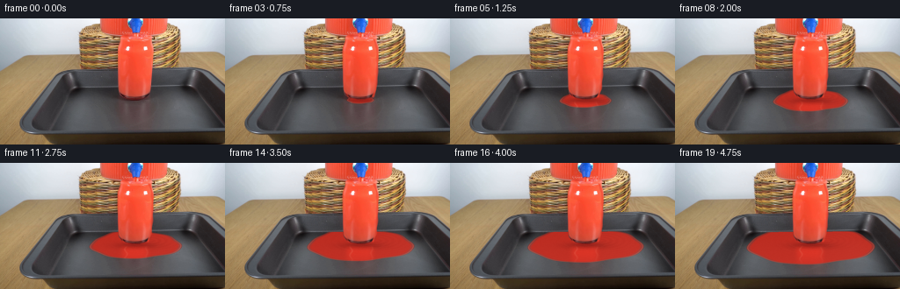
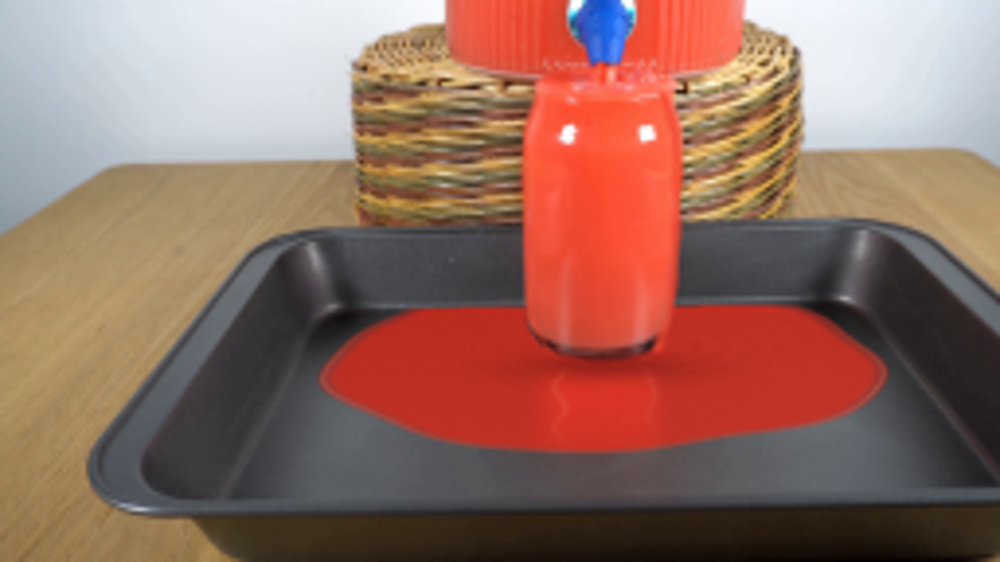
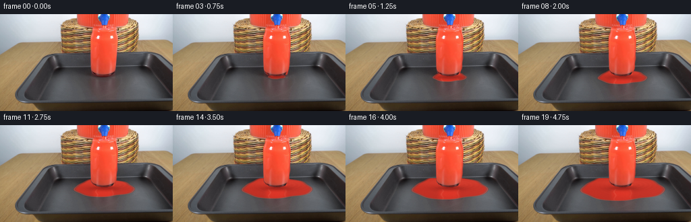

CODING AGENTS AS PIXEL WORLD MODELS
traex/GPT-6.1-Sol · 0089
点击播放 · 原生 RGB 像素
逐轮保存的候选
回放视频、检查图与代码变化。
每份候选均可单独播放。实际图片检查记录在下方工具轨迹中。
候选 01播放与检查图
点击播放 · 原生 RGB 像素


展开代码变化
--- 上一保存版本
+++ 本次保存版本
@@ -0,0 +1,163 @@
+from pathlib import Path
+import numpy as np
+from PIL import Image, ImageDraw, ImageFilter
+import artifact_io
+
+ROOT = Path(__file__).resolve().parent
+S=4
+W,H=256,144
+base_img=Image.open(ROOT/'first_frame.png').convert('RGB')
+base=np.asarray(base_img).copy()
+big=np.asarray(base_img.resize((W*S,H*S),Image.Resampling.BICUBIC),dtype=np.float32)
+y,x=np.mgrid[0:H*S,0:W*S].astype(float)
+x=(x+.5)/S;y=(y+.5)/S
+rng=np.random.default_rng(18)
+noise=np.asarray(Image.fromarray((rng.random((H,W))*255).astype('uint8')).resize((W*S,H*S),Image.Resampling.BICUBIC),float)/255-.5
+
+def smooth(a,b,v):
+ q=np.clip((v-a)/(b-a),0,1)
+ return q*q*(3-2*q)
+
+def layer(img,color,alpha):
+ if np.ndim(color)==1: color=np.array(color)[None,None,:]
+ return img*(1-alpha[...,None])+color*alpha[...,None]
+
+# The mask is analytic drawing of the existing jar, solely for occlusion of
+# the shallow liquid surface. No extracted masks or external inputs are used.
+maskim=Image.new('L',(W*S,H*S),0)
+draw=ImageDraw.Draw(maskim)
+outline=[(138.8,21),(168.9,21),(170.1,26),(173.4,34),(173.9,42),
+ (173.0,65),(171.7,81.8),(169.8,87.3),(165.5,90.3),(159,92.1),
+ (151,92.3),(143.7,90.8),(138.3,88.4),(135.3,84.4),(134.7,77),
+ (133.7,41),(134.6,33),(136.8,27)]
+draw.polygon([(a*S,b*S) for a,b in outline],fill=255)
+jar=np.asarray(maskim,dtype=float)/255
+jarblur=np.asarray(maskim.filter(ImageFilter.GaussianBlur(.4*S)),float)/255
+
+# Plane coordinates: top-down distance is foreshortened by the camera.
+dx=x-154.0
+dy=(y-92.4)/.31
+r=np.sqrt(dx*dx+dy*dy)
+ang=np.arctan2(dy,dx)
+
+# Border of tray floor, all liquid stays on the horizontal baking tray surface.
+floor_poly=[(87,79),(210,78),(226,88),(254,120),(254,127),(51,127),(49,122),(76,87)]
+fim=Image.new('L',(W*S,H*S),0)
+ImageDraw.Draw(fim).polygon([(a*S,b*S) for a,b in floor_poly],fill=255)
+floor=np.asarray(fim,dtype=float)/255
+
+def puddle(img,t):
+ age=max(t-.55,0)
+ if not age:return img
+ # A gravity-fed flow builds a thin, low puddle. Its area grows linearly
+ # with delivered volume, with a short smooth emergence at the base.
+ R=34.8*np.sqrt(age)
+ irregular=1+.031*np.sin(3*ang+.8)+.025*np.sin(5*ang-.9)+.013*np.sin(9*ang+1.2)
+ # Small fixed irregularities settle rather than crawl around the floor.
+ Rtheta=R*irregular*(1+.08*np.sin(ang))
+ signed=Rtheta-r
+ wet=smooth(-.25,.65,signed)*floor*(1-jarblur)
+ wet*=smooth(0,.15,age)
+ if not np.any(wet):return img
+ depth=np.clip(signed/9,0,1)
+ # A red fluid on charcoal metal, faintly translucent only at its advancing rim.
+ op=(.42+.53*smooth(0,6,signed))*wet
+ clr=np.empty_like(img)
+ clr[:]=[194,43,31]
+ illum=4*np.sin((x-85)/90)+3*(y-90)/32
+ clr+=illum[...,None]
+ clr+=noise[...,None]*1.6
+ # The cylindrical glass casts a dark contact shadow and warm reflection.
+ shadow=np.exp(-((x-155)/22)**2-((y-94.5)/3.6)**2)
+ clr-=shadow[...,None]*np.array([49,14,9])
+ reflect=np.exp(-((x-153.5)/15.2)**6)*np.exp(-((y-99)/16)**2)
+ reflect*=smooth(92.5,97,y)
+ clr+=reflect[...,None]*np.array([29,5,2])
+ # Fine disturbance waves radiate from the streams where they meet the tray.
+ rr=np.sqrt(((x-171.0)*1.0)**2+((y-88.9)/.32)**2)
+ waves=np.sin(rr*.88-t*11.0)*np.exp(-rr/23)*smooth(0,8,rr)
+ clr+=waves[...,None]*np.array([4.2,2.4,1.7])
+ img=layer(img,clr,op)
+ # Capillary meniscus: a dark edge and a narrow, direction-dependent reflection.
+ rim=np.exp(-((signed-.65)/.47)**2)*wet
+ img=layer(img,[106,26,22],rim*.29)
+ lit=np.clip(.38+.55*np.sin(ang)+.13*np.cos(ang*2),0,1)
+ glint=np.exp(-((signed-1.45)/.40)**2)*wet*lit*.49
+ img=layer(img,[244,150,118],glint)
+ # Broad soft highlights from the lights and reflected vessel, broken by waves.
+ reflection=(np.exp(-((x-143.4-1.4*np.sin(y*.6+t*3))/1.0)**2)
+ +.65*np.exp(-((x-167.0-.9*np.sin(y*.6+t*3.4))/1.1)**2))
+ reflection*=np.exp(-((y-101)/11)**2)*smooth(93,98,y)*wet*.12
+ img=layer(img,[255,185,151],np.clip(reflection,0,.16))
+ # Elliptical ripples immediately around the jar's foot.
+ re=np.sqrt(((x-154)/1.0)**2+((y-90.5)/.34)**2)
+ for start in [.65,1.4,2.15,2.9,3.65,4.4]:
+ waveage=t-start
+ if waveage<0:continue
+ wr=18+waveage*18
+ ring=np.exp(-((re-wr)/.60)**2)*np.exp(-waveage*1.5)
+ ring*=wet*smooth(91,94,y)*.10
+ img=layer(img,[242,114,82],ring)
+ return img
+
+def spill(img,t):
+ # Red liquid exits the small outlet directly into the open rim.
+ a=smooth(0,.28,t)
+ streamx=154.0+.14*np.sin(15*t+2.4*y)
+ stream_half=.80+.10*np.sin(y*2-t*12)
+ stream=smooth(stream_half+.18,stream_half-.18,np.abs(x-streamx))
+ stream*=smooth(15.6,16.1,y)*(1-smooth(21.3,22.0,y))*a
+ img=layer(img,[245,54,31],stream*.94)
+ sheen=np.exp(-((x-streamx+.28)/.17)**2)*stream*.65
+ img=layer(img,[255,170,120],sheen)
+ # Surface turbulence visible in the small opening, behind the near glass rim.
+ surface=np.exp(-((y-(22.2+.3*np.sin(t*9+(x-154)*.47)))/.43)**2)
+ surface*=smooth(138.7,142,x)*(1-smooth(165.5,169,x))*a*.28
+ img=layer(img,[255,105,73],surface)
+ # Existing glass is full in the starting image. Excess water gently crests
+ # the lip and descends down the outside before pooling on the metal tray.
+ age=max(t-.10,0)
+ fallend=24+125*age
+ act=smooth(0,.55,age)
+ for side in [1,-1]:
+ if side==1:
+ px=np.interp(y,[23,27,34,42,65,81,88,92],[169,171,173.0,173.5,173.0,171.4,168.8,168])
+ width=1.7+.4*np.sin(t*8+y*.45)
+ amp=1.0
+ else:
+ px=np.interp(y,[23,27,34,42,65,81,88,92],[138.2,136.9,134.5,134.0,134.9,135.7,139.5,142])
+ width=1.12+.25*np.sin(t*7+y*.38+1)
+ amp=.59
+ band=np.exp(-((x-px)/(width*.74))**4)
+ band*=smooth(22.6,25,y)*(1-smooth(88.7,91.5,y))*(1-smooth(fallend-.8,fallend+.5,y))*act*amp
+ # Soft glossy skin of overflowing red water, retaining the glass reflections.
+ img=layer(img,[239,58,38],band*.68)
+ light=np.exp(-((x-px-.38*side)/.22)**2)*band
+ light*=.29+.07*np.sin(y*.45-t*14)
+ img=layer(img,[255,138,96],light)
+ # A nearly clear moving highlight farther inward, giving a rounded wet film.
+ inner=np.exp(-((x-px+side*.75)/.45)**2)*band*.10
+ img=layer(img,[255,185,139],inner)
+ # Very small localized disturbances at the base, without large cartoon splashes.
+ splash_act=smooth(.55,.85,t)
+ for k in range(3):
+ phase=(t*3.4+k*.29)%1
+ sx=170.1+np.sin(k*3+1)*phase*2.5
+ sy=88.7-2.0*4*phase*(1-phase)+phase*.7
+ rad=.28*(1-phase)+.14
+ bead=np.exp(-(((x-sx)/rad)**2+((y-sy)/(rad*.65))**2)*2)
+ img=layer(img,[243,90,58],bead*splash_act*.6)
+ return img
+
+frames=[base]
+for i in range(1,20):
+ t=i/4
+ im=puddle(big.copy(),t)
+ im=spill(im,t)
+ out=np.asarray(Image.fromarray(np.uint8(np.clip(im,0,255))).resize((W,H),Image.Resampling.LANCZOS)).copy()
+ # Only modify the region of liquid; the locked camera's background is exact.
+ change=np.max(np.abs(im-big),axis=2)
+ m=np.asarray(Image.fromarray(np.uint8(np.clip(change*255,0,255))).resize((W,H),Image.Resampling.LANCZOS))>0
+ out[~m]=base[~m]
+ frames.append(out)
+artifact_io.save(np.asarray(frames,dtype=np.uint8),ROOT)
候选 02播放与检查图
点击播放 · 原生 RGB 像素

展开代码变化
--- 上一保存版本
+++ 本次保存版本
@@ -51,8 +51,8 @@
if not age:return img
# A gravity-fed flow builds a thin, low puddle. Its area grows linearly
# with delivered volume, with a short smooth emergence at the base.
- R=34.8*np.sqrt(age)
- irregular=1+.031*np.sin(3*ang+.8)+.025*np.sin(5*ang-.9)+.013*np.sin(9*ang+1.2)
+ R=29.8*np.sqrt(age)
+ irregular=1+.048*np.sin(3*ang+.8)+.034*np.sin(5*ang-.9)+.015*np.sin(9*ang+1.2)
# Small fixed irregularities settle rather than crawl around the floor.
Rtheta=R*irregular*(1+.08*np.sin(ang))
signed=Rtheta-r
@@ -61,12 +61,19 @@
if not np.any(wet):return img
depth=np.clip(signed/9,0,1)
# A red fluid on charcoal metal, faintly translucent only at its advancing rim.
- op=(.42+.53*smooth(0,6,signed))*wet
+ op=(.32+.62*smooth(0,6,signed))*wet
clr=np.empty_like(img)
- clr[:]=[194,43,31]
+ clr[:]=[201,45,32]
illum=4*np.sin((x-85)/90)+3*(y-90)/32
clr+=illum[...,None]
clr+=noise[...,None]*1.6
+ # The liquid is a glossy horizontal surface, not a flat colored disc.
+ # The pale wall makes a broad blurred reflection at the far side;
+ # the red dispenser reflects around the centerline behind the jar.
+ far_reflect=np.exp(-((y-84.8)/5.8)**2)*(0.7+0.3*np.cos((x-154)*.047))
+ clr+=far_reflect[...,None]*np.array([19,13,10])
+ near_shading=smooth(95,111,y)
+ clr-=near_shading[...,None]*np.array([8,3,2])
# The cylindrical glass casts a dark contact shadow and warm reflection.
shadow=np.exp(-((x-155)/22)**2-((y-94.5)/3.6)**2)
clr-=shadow[...,None]*np.array([49,14,9])
@@ -89,6 +96,11 @@
+.65*np.exp(-((x-167.0-.9*np.sin(y*.6+t*3.4))/1.1)**2))
reflection*=np.exp(-((y-101)/11)**2)*smooth(93,98,y)*wet*.12
img=layer(img,[255,185,151],np.clip(reflection,0,.16))
+ # Soft edge lights curve around the meniscus. They are optically blurred
+ # at the same scale as the photographic source image.
+ edge_light=np.exp(-((signed-2.05)/.82)**2)*wet
+ edge_light*=np.exp(-((ang-1.68)/.57)**2)*.19
+ img=layer(img,[242,145,115],edge_light)
# Elliptical ripples immediately around the jar's foot.
re=np.sqrt(((x-154)/1.0)**2+((y-90.5)/.34)**2)
for start in [.65,1.4,2.15,2.9,3.65,4.4]:
@@ -114,6 +126,13 @@
surface=np.exp(-((y-(22.2+.3*np.sin(t*9+(x-154)*.47)))/.43)**2)
surface*=smooth(138.7,142,x)*(1-smooth(165.5,169,x))*a*.28
img=layer(img,[255,105,73],surface)
+ for k in range(2):
+ phase=(t*2.9+k*.5)%1
+ radius=2.1+phase*12
+ rr=np.sqrt((x-154)**2+((y-22.4)/.18)**2)
+ ripple=np.exp(-((rr-radius)/.38)**2)*(1-phase)*.33*a
+ ripple*=smooth(139,141,x)*(1-smooth(167,169,x))
+ img=layer(img,[255,155,120],ripple)
# Existing glass is full in the starting image. Excess water gently crests
# the lip and descends down the outside before pooling on the metal tray.
age=max(t-.10,0)
@@ -154,10 +173,10 @@
t=i/4
im=puddle(big.copy(),t)
im=spill(im,t)
- out=np.asarray(Image.fromarray(np.uint8(np.clip(im,0,255))).resize((W,H),Image.Resampling.LANCZOS)).copy()
- # Only modify the region of liquid; the locked camera's background is exact.
- change=np.max(np.abs(im-big),axis=2)
- m=np.asarray(Image.fromarray(np.uint8(np.clip(change*255,0,255))).resize((W,H),Image.Resampling.LANCZOS))>0
- out[~m]=base[~m]
+ # Resample only the physical change to preserve the original photograph's
+ # exact detail everywhere outside the liquid.
+ delta=im-big
+ diff=np.stack([np.asarray(Image.fromarray(delta[:,:,c].astype('float32'),mode='F').resize((W,H),Image.Resampling.LANCZOS)) for c in range(3)],axis=-1)
+ out=np.uint8(np.clip(np.rint(base.astype(float)+diff),0,255))
frames.append(out)
artifact_io.save(np.asarray(frames,dtype=np.uint8),ROOT)
可观测工具轨迹
实际执行的命令与返回图片。
命令 1exit 0
/bin/bash -lc "ls -la && cat prompt.txt && printf '\\n---RULES---\\n' && cat GENERATION_RULES.md"
命令 2exit 0
/bin/bash -lc "cat artifact_io.py && python - <<'PY'
from PIL import Image
im=Image.open('first_frame.png');print(im.size);im.resize((1024,576)).save('.tmp/first_large.png')
PY"命令 3exit 0
/bin/bash -lc "python - <<'PY'
from PIL import Image,ImageDraw
im=Image.open('first_frame.png').resize((1024,576))
d=ImageDraw.Draw(im)
for x in range(120,201,10):
d.line([(x*4,0),(x*4,110*4)],fill=(255,255,255),width=1);d.text((x*4,400),str(x),fill='white')
for y in range(10,111,10):
d.line([(120*4,y*4),(200*4,y*4)],fill=(255,255,255),width=1);d.text((800,y*4),str(y),fill='white')
im.save('.tmp/grid.png')
PY"命令 4exit 0
/bin/bash -lc "python - <<'PY'
from PIL import Image
im=Image.open('first_frame.png');im.crop((125,0,183,96)).resize((464,768)).save('.tmp/object.png')
PY"命令 5exit 0
/bin/bash -lc "cat > generate.py <<'PY'
from pathlib import Path
import numpy as np
from PIL import Image, ImageDraw, ImageFilter
import artifact_io
ROOT = Path(__file__).resolve().parent
S=4
W,H=256,144
base_img=Image.open(ROOT/'first_frame.png').convert('RGB')
base=np.asarray(base_img).copy()
big=np.asarray(base_img.resize((W*S,H*S),Image.Resampling.BICUBIC),dtype=np.float32)
y,x=np.mgrid[0:H*S,0:W*S].astype(float)
x=(x+.5)/S;y=(y+.5)/S
rng=np.random.default_rng(18)
noise=np.asarray(Image.fromarray((rng.random((H,W))*255).astype('uint8')).resize((W*S,H*S),Image.Resampling.BICUBIC),float)/255-.5
def smooth(a,b,v):
q=np.clip((v-a)/(b-a),0,1)
return q*q*(3-2*q)
def layer(img,color,alpha):
if np.ndim(color)==1: color=np.array(color)[None,None,:]
return img*(1-alpha[...,None])+color*alpha[...,None]
# The mask is analytic drawing of the existing jar, solely for occlusion of
# the shallow liquid surface. No extracted masks or external inputs are used.
maskim=Image.new('L',(W*S,H*S),0)
draw=ImageDraw.Draw(maskim)
outline=[(138.8,21),(168.9,21),(170.1,26),(173.4,34),(173.9,42),
(173.0,65),(171.7,81.8),(169.8,87.3),(165.5,90.3),(159,92.1),
(151,92.3),(143.7,90.8),(138.3,88.4),(135.3,84.4),(134.7,77),
(133.7,41),(134.6,33),(136.8,27)]
draw.polygon([(a*S,b*S) for a,b in outline],fill=255)
jar=np.asarray(maskim,dtype=float)/255
jarblur=np.asarray(maskim.filter(ImageFilter.GaussianBlur(.4*S)),float)/255
# Plane coordinates: top-down distance is foreshortened by the camera.
dx=x-154.0
dy=(y-92.4)/.31
r=np.sqrt(dx*dx+dy*dy)
ang=np.arctan2(dy,dx)
# Border of tray floor, all liquid stays on the horizontal baking tray surface.
floor_poly=[(87,79),(210,78),(226,88),(254,120),(254,127),(51,127),(49,122),(76,87)]
fim=Image.new('L',(W*S,H*S),0)
ImageDraw.Draw(fim).polygon([(a*S,b*S) for a,b in floor_poly],fill=255)
floor=np.asarray(fim,dtype=float)/255
def puddle(img,t):
age=max(t-.55,0)
if not age:return img
# A gravity-fed flow builds a thin, low puddle. Its area grows linearly
# with delivered volume, with a short smooth emergence at the base.
R=34.8*np.sqrt(age)
irregular=1+.031*np.sin(3*ang+.8)+.025*np.sin(5*ang-.9)+.013*np.sin(9*ang+1.2)
# Small fixed irregularities settle rather than crawl around the floor.
Rtheta=R*irregular*(1+.08*np.sin(ang))
signed=Rtheta-r
wet=smooth(-.25,.65,signed)*floor*(1-jarblur)
wet*=smooth(0,.15,age)
if not np.any(wet):return img
depth=np.clip(signed/9,0,1)
# A red fluid on charcoal metal, faintly translucent only at its advancing rim.
op=(.42+.53*smooth(0,6,signed))*wet
clr=np.empty_like(img)
clr[:]=[194,43,31]
illum=4*np.sin((x-85)/90)+3*(y-90)/32
clr+=illum[...,None]
clr+=noise[...,None]*1.6
# The cylindrical glass casts a dark contact shadow and warm reflection.
shadow=np.exp(-((x-155)/22)**2-((y-94.5)/3.6)**2)
clr-=shadow[...,None]*np.array([49,14,9])
reflect=np.exp(-((x-153.5)/15.2)**6)*np.exp(-((y-99)/16)**2)
reflect*=smooth(92.5,97,y)
clr+=reflect[...,None]*np.array([29,5,2])
# Fine disturbance waves radiate from the streams where they meet the tray.
rr=np.sqrt(((x-171.0)*1.0)**2+((y-88.9)/.32)**2)
waves=np.sin(rr*.88-t*11.0)*np.exp(-rr/23)*smooth(0,8,rr)
clr+=waves[...,None]*np.array([4.2,2.4,1.7])
img=layer(img,clr,op)
# Capillary meniscus: a dark edge and a narrow, direction-dependent reflection.
rim=np.exp(-((signed-.65)/.47)**2)*wet
img=layer(img,[106,26,22],rim*.29)
lit=np.clip(.38+.55*np.sin(ang)+.13*np.cos(ang*2),0,1)
glint=np.exp(-((signed-1.45)/.40)**2)*wet*lit*.49
img=layer(img,[244,150,118],glint)
# Broad soft highlights from the lights and reflected vessel, broken by waves.
reflection=(np.exp(-((x-143.4-1.4*np.sin(y*.6+t*3))/1.0)**2)
+.65*np.exp(-((x-167.0-.9*np.sin(y*.6+t*3.4))/1.1)**2))
reflection*=np.exp(-((y-101)/11)**2)*smooth(93,98,y)*wet*.12
img=layer(img,[255,185,151],np.clip(reflection,0,.16))
# Elliptical ripples immediately around the jar's foot.
re=np.sqrt(((x-154)/1.0)**2+((y-90.5)/.34)**2)
for start in [.65,1.4,2.15,2.9,3.65,4.4]:
waveage=t-start
if waveage<0:continue
wr=18+waveage*18
ring=np.exp(-((re-wr)/.60)**2)*np.exp(-waveage*1.5)
ring*=wet*smooth(91,94,y)*.10
img=layer(img,[242,114,82],ring)
return img
def spill(img,t):
# Red liquid exits the small outlet directly into the open rim.
a=smooth(0,.28,t)
streamx=154.0+.14*np.sin(15*t+2.4*y)
stream_half=.80+.10*np.sin(y*2-t*12)
stream=smooth(stream_half+.18,stream_half-.18,np.abs(x-streamx))
stream*=smooth(15.6,16.1,y)*(1-smooth(21.3,22.0,y))*a
img=layer(img,[245,54,31],stream*.94)
sheen=np.exp(-((x-streamx+.28)/.17)**2)*stream*.65
img=layer(img,[255,170,120],sheen)
# Surface turbulence visible in the small opening, behind the near glass rim.
surface=np.exp(-((y-(22.2+.3*np.sin(t*9+(x-154)*.47)))/.43)**2)
surface*=smooth(138.7,142,x)*(1-smooth(165.5,169,x))*a*.28
img=layer(img,[255,105,73],surface)
# Existing glass is full in the starting image. Excess water gently crests
# the lip and descends down the outside before pooling on the metal tray.
age=max(t-.10,0)
fallend=24+125*age
act=smooth(0,.55,age)
for side in [1,-1]:
if side==1:
px=np.interp(y,[23,27,34,42,65,81,88,92],[169,171,173.0,173.5,173.0,171.4,168.8,168])
width=1.7+.4*np.sin(t*8+y*.45)
amp=1.0
else:
px=np.interp(y,[23,27,34,42,65,81,88,92],[138.2,136.9,134.5,134.0,134.9,135.7,139.5,142])
width=1.12+.25*np.sin(t*7+y*.38+1)
amp=.59
band=np.exp(-((x-px)/(width*.74))**4)
band*=smooth(22.6,25,y)*(1-smooth(88.7,91.5,y))*(1-smooth(fallend-.8,fallend+.5,y))*act*amp
# Soft glossy skin of overflowing red water, retaining the glass reflections.
img=layer(img,[239,58,38],band*.68)
light=np.exp(-((x-px-.38*side)/.22)**2)*band
light*=.29+.07*np.sin(y*.45-t*14)
img=layer(img,[255,138,96],light)
# A nearly clear moving highlight farther inward, giving a rounded wet film.
inner=np.exp(-((x-px+side*.75)/.45)**2)*band*.10
img=layer(img,[255,185,139],inner)
# Very small localized disturbances at the base, without large cartoon splashes.
splash_act=smooth(.55,.85,t)
for k in range(3):
phase=(t*3.4+k*.29)%1
sx=170.1+np.sin(k*3+1)*phase*2.5
sy=88.7-2.0*4*phase*(1-phase)+phase*.7
rad=.28*(1-phase)+.14
bead=np.exp(-(((x-sx)/rad)**2+((y-sy)/(rad*.65))**2)*2)
img=layer(img,[243,90,58],bead*splash_act*.6)
return img
frames=[base]
for i in range(1,20):
t=i/4
im=puddle(big.copy(),t)
im=spill(im,t)
out=np.asarray(Image.fromarray(np.uint8(np.clip(im,0,255))).resize((W,H),Image.Resampling.LANCZOS)).copy()
# Only modify the region of liquid; the locked camera's background is exact.
change=np.max(np.abs(im-big),axis=2)
m=np.asarray(Image.fromarray(np.uint8(np.clip(change*255,0,255))).resize((W,H),Image.Resampling.LANCZOS))>0
out[~m]=base[~m]
frames.append(out)
artifact_io.save(np.asarray(frames,dtype=np.uint8),ROOT)
PY
python generate.py"命令 6exit 0
/bin/bash -lc "python - <<'PY'
from PIL import Image
Image.open('frames/19.png').resize((1024,576)).save('.tmp/end.png')
PY"命令 7exit 0
/bin/bash -lc 'python generate.py'
命令 8exit 0
/bin/bash -lc "python - <<'PY'
from PIL import Image
import numpy as np
from pathlib import Path
assert np.array_equal(np.array(Image.open('first_frame.png')), np.array(Image.open('frames/00.png')))
f=sorted(Path('frames').glob('*.png'))
assert len(f)==20
assert all(np.asarray(Image.open(p)).shape==(144,256,3) for p in f)
p=np.load('pixels.npz')['pixels'];print('Verified:',len(f),'RGB frames; first frame exact. Packed shape:',p.shape)
PY"视觉工具实际返回图片 1
视觉工具实际返回图片 2

视觉工具实际返回图片 3

视觉工具实际返回图片 4

视觉工具实际返回图片 5

视觉工具实际返回图片 6

保存候选 2 份；完成命令 8 次；可验证图片返回 6 张。原始 API 响应与完整日志保留在本地。